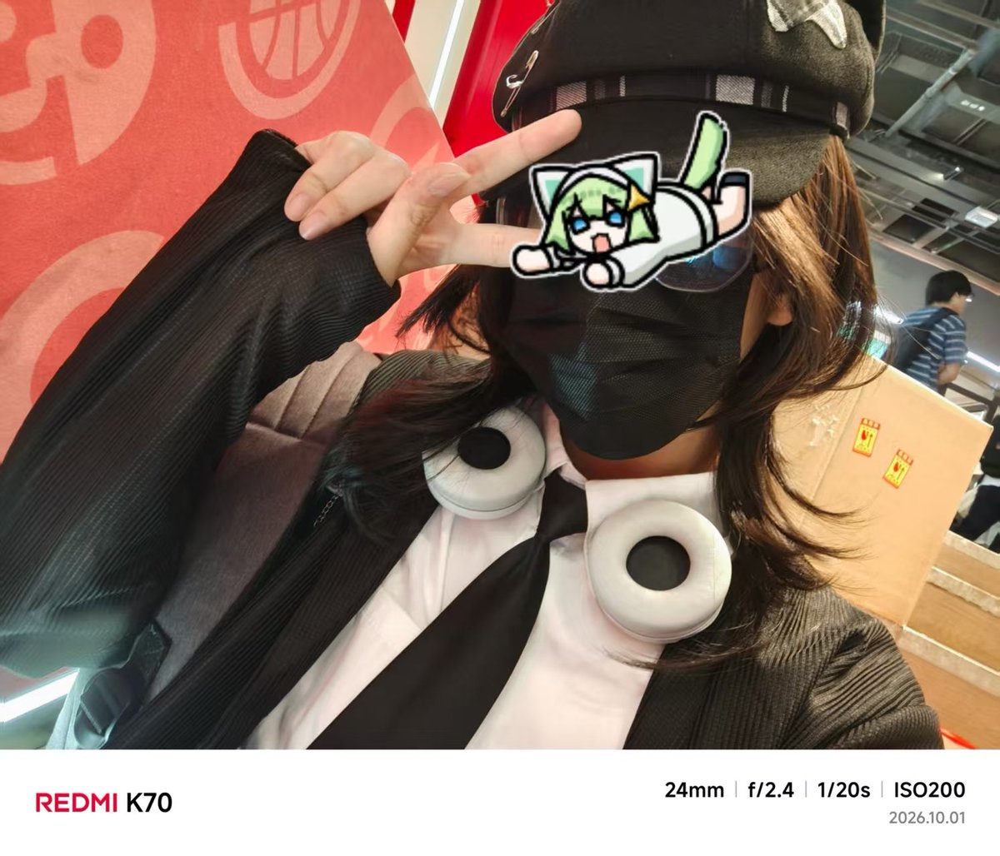
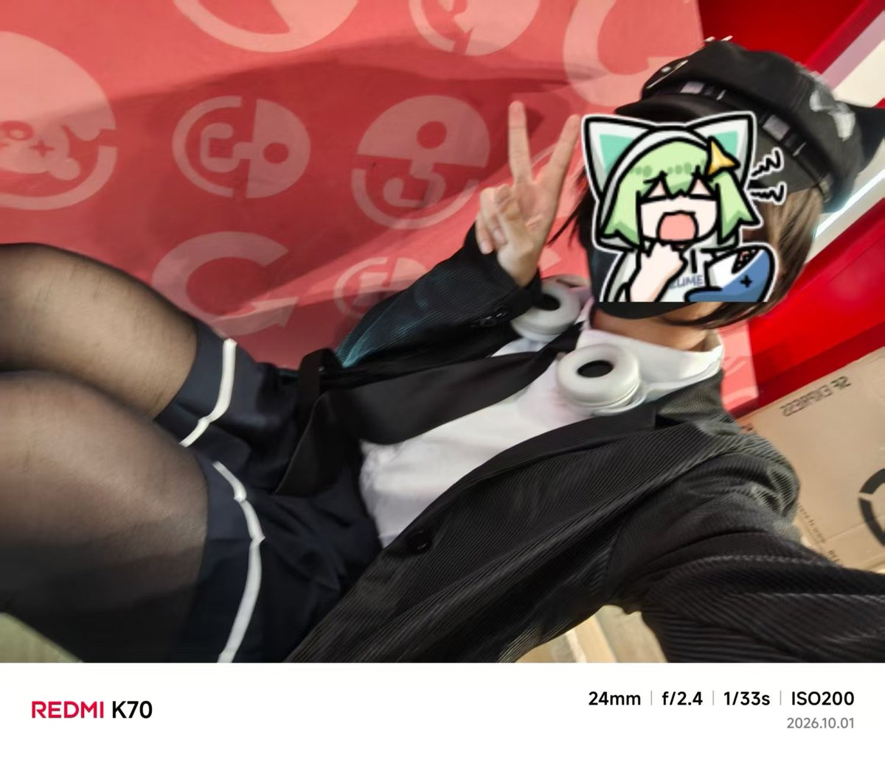

碎星✨
@StarryNocts
@Remth_07 好萌！


Remth
@Remth_07
每周二上午最后两节课是数学课连堂 这100分钟内我的心路历程:
认真听课→居然听懂了我真是天才→为什么我又听不懂了→书写一些例题→视奸一下同桌→我草讲到哪了→下课了到处蠕动→十分钟后继续听课→和同桌进行一些八卦→聊一些涩涩→听一下讲课→想涩涩...→快下课了准备抢饭→被旁边的人创飞 https://t.co/d0HqAuS546